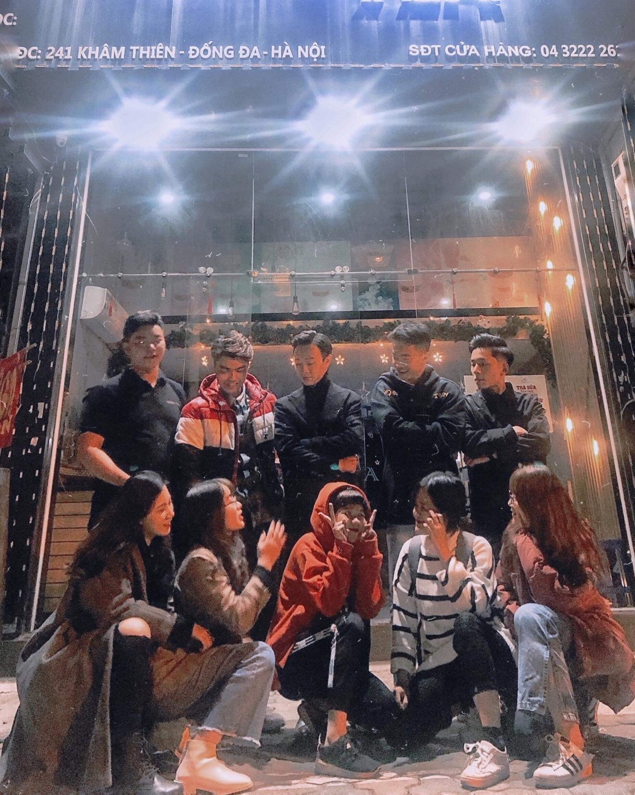

I always regard the time with my family and my friends. Whenever I have square time, I try to make that time for my people I care about. Even in high school or university, I still get a lot of good friends, we created a variety of good memories like we hung out, we played games, played sports and of course we learned with each other.

Technology is all about my life, i love software, i love hardware also. Like I said recently, build a custom pc and buy a new MSI gaming laptop (that is secret, don’t talk to my mom). My PC has a really powerful hardware system, with CPU 6 core 12 thread, 16GB RAM and a present of Radeon RX580. Not only that, I equip my sweetheart fully gear with IKBC keyboard, Steelseries mouse, Steelseries mousepad, HyperX earbuds headset and a nicely gaming chair from Edra, a Vietnamese gaming gear brand.
I loved Manchester United when I was a 8 years old boy. I don’t know why but even they lose a lot of games from years to years, months to months but i still love them, that is just love. Like everytime no sleep to waiting for M.U play makes me a kind of dopamine, that boosts me a lot of energy, makes me feel comfortable. I don’t love anybody in M.U because I love whole of the club even the manager or CEO (sorry i’m not talking about Ed Woodward).